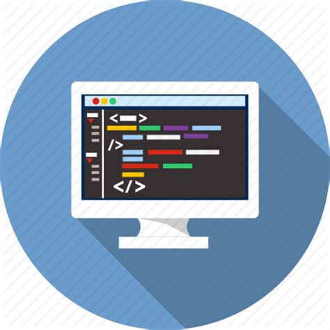

SKILL SAYA ANTARA LAIN
EDITING
 |
Dunia edit Mengedit sudah saya tekuni. mulai dari editing gambar , video , text atau pun database. Program editing gambar dan video yang saya bisa yaitu Adobe dan Corel . Program editing text yang saya bisa Microsoft Office 2007. Saya Belajar Editing Sejak Lulus SMK , pada saat itu saya membuka Percetakan Undangan Pribadi Dirumah. |
CODING
|  | Coding atau Programming merupakan keahlian yang harus dimiliki oleh seorang Anak IT. Saya mengenal Coding Sejak Dari SMK , dari situ saya mulai minat suka dengan programming. |
PUBLIC SPEAKING
 |
Public Speaking atau Kemampuan Bicara didepan Umum(banyak orang) suatu Skill yang jarang dimiliki oleh anak IT, karena nya saya sudah memulai dengan berorganisasi baik diluar maupun diluar kampus. Saya sudah ikut berorganisasi sejak masih SMP hingga Sekarang. |